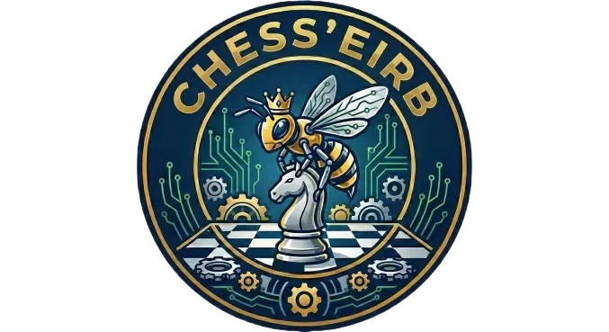
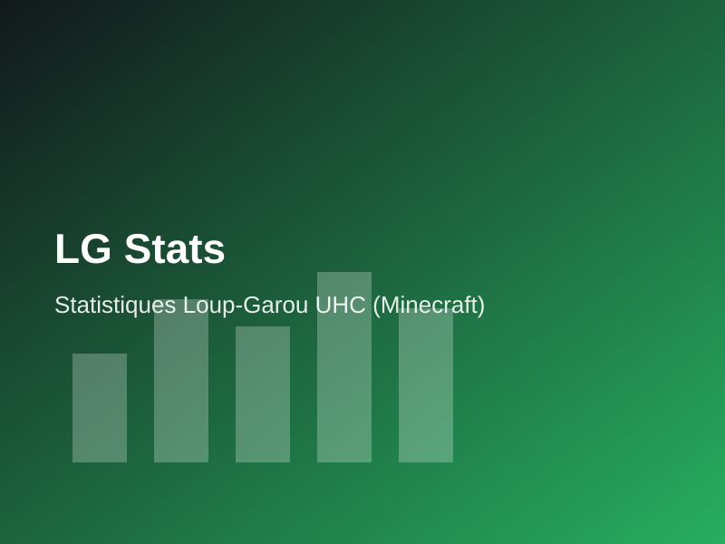
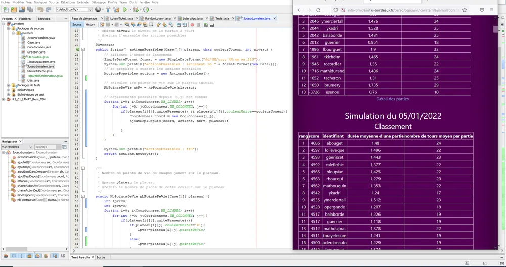
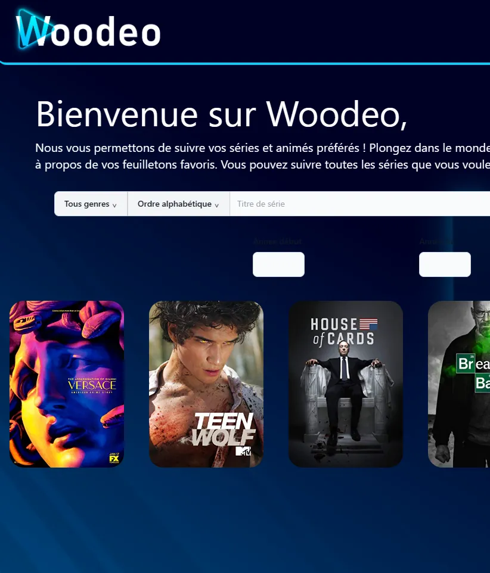
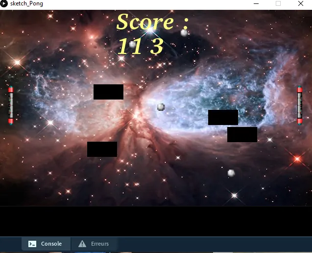
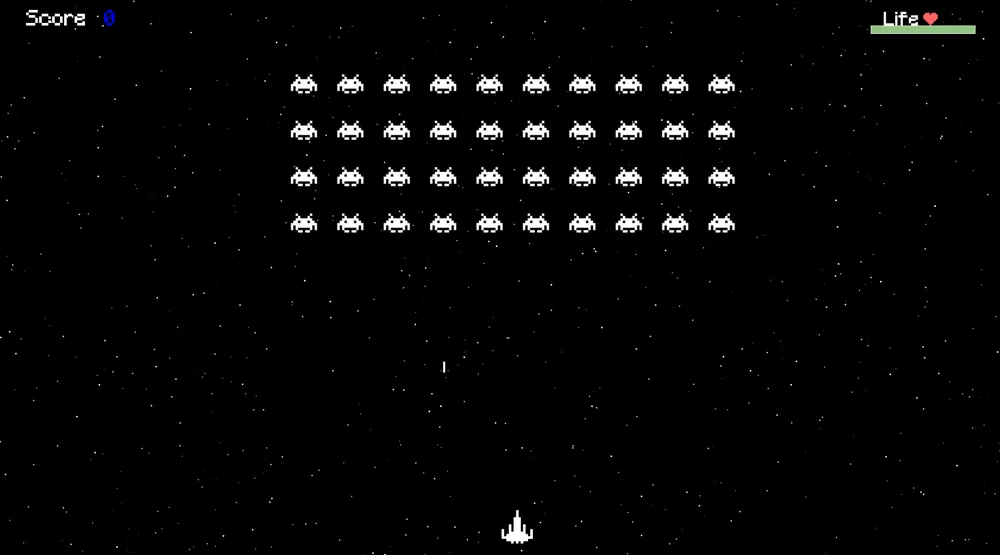
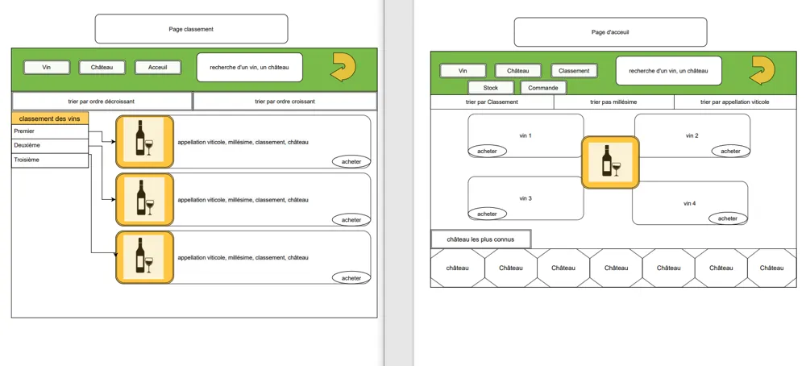
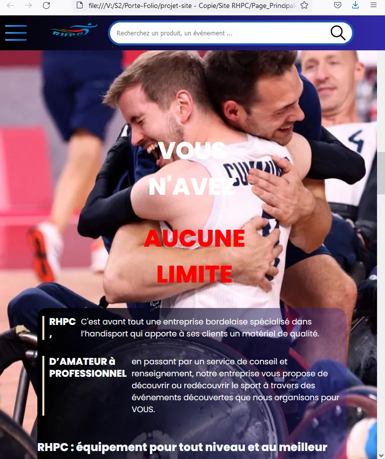
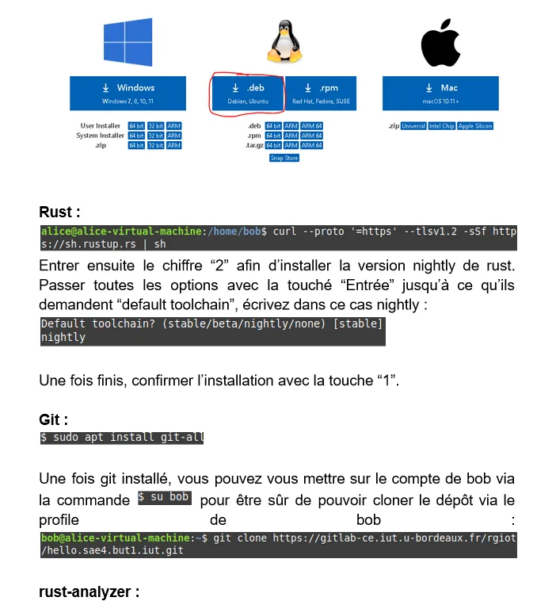
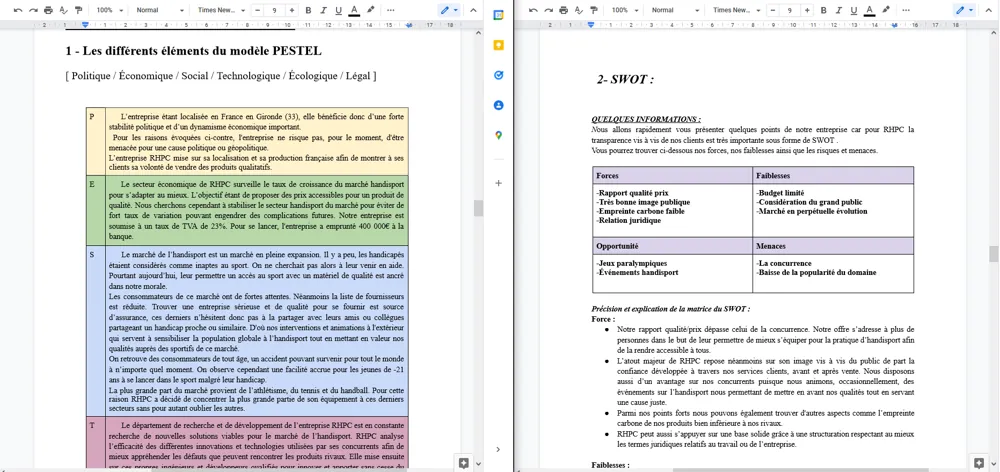

Expériences proCarrière
Mon parcours en entreprise
Quatre années d'alternance, dans la banque puis dans la recherche scientifique, et deux stages, dont un à l'étranger, m'ont permis de travailler sur des systèmes en production, au sein d'équipes agiles comme dans des environnements à fortes exigences de fiabilité. En parallèle, je suis auto-entrepreneur et j'ai co-fondé la SARL Xenalis.
4 ans
d'alternance
2 stages
France · Italie
CEA
Recherche scientifique
LBP
Banque & assurance
Expériences professionnelles
Sept. 2024 – sept. 2027
Apprenti ingénieur logiciel · CEA
Modernisation (jouvance) d'une partie du système de contrôle-commande du Laser Mégajoule, une installation de recherche aux exigences élevées en matière de fiabilité et de qualité logicielle.
Été 2026 · 3 mois
Stagiaire développeur full-stack · Extramus, Terranova da Sibari (Italie)
Développement d'une plateforme RH de gestion des stagiaires Erasmus+ (recrutement, hébergement, présence, paiements), au sein d'une équipe de quatre développeurs. Application en production.
Voir le projetAoût 2023 – juil. 2024
Apprenti développeur · La Banque Postale
Développeur back-end dans l'équipe Tool de la DSIBA (Direction des Systèmes d'Information Banque et Assurance). Développement en PHP d'applications internes ; évolution et maintenance de trois applications en méthode agile (daily meetings, sprint reviews).
Avr. – juin 2023
Stagiaire développeur Python · La Banque Postale
Équipe HELP de la DSIBA : contribution à la cartographie du système d'information de la banque, à l'aide d'un ETL (Extract, Transform, Load) pour collecter et traiter les données.
Entrepreneuriat
En cours
Co-fondateur & associé · Xenalis
Co-fondation de Xenalis, une SARL qui développe une boutique de vente et d'information sur les produits Pokémon. Son positionnement : lutter contre le scalping (achat massif de produits pour les revendre au prix fort) afin que collectionneurs et joueurs puissent acheter au juste prix.
En cours
Auto-entrepreneur
Activité indépendante menée en parallèle de mes études et de mon alternance.
Environnement technique en entreprise
- PHP
- Python
- C#
- SQL
- Bash
- Git
- Docker
- Red Hat Linux
- Artifactory
- HeidiSQL
- VS Code
À proposProfil
Qui suis-je ?
Passionné de développement logiciel, polyvalent et à l'écoute, j'ai l'habitude de travailler en équipe et en mode projet. En dehors des cours, je préside Chesseirb, l'association d'échecs de l'ENSEIRB-MATMECA, que j'ai co-fondée, après avoir entraîné de jeunes joueurs de tennis pendant six ans.
2027
Diplôme d'ingénieur
3 langues
FR · EN (B2) · ES (B1)
15/3
Classement tennis
Chesseirb
Président & co-fondateur
Formation
2024 – 2027
Diplôme d'ingénieur · ENSEIRB-MATMECA
Bordeaux INP, filière Réseaux et Informatique (R&I) par apprentissage, actuellement en 3e année. Génie logiciel, réseaux, systèmes, ainsi que mathématiques et management.
2021 – 2024
BUT Informatique · IUT de Bordeaux
Programmation (Java, C, C#, Python, PHP), bases de données, développement web et Bash. Projets en équipe avec Git/GitHub et méthodes agiles. Troisième année en alternance.
2018 – 2021
Baccalauréat général, mention Bien · Lycée Pape Clément
Spécialités mathématiques et physique-chimie, option mathématiques expertes. Section européenne espagnol.
Engagements
Association étudiante
Président & co-fondateur · Chesseirb
Création et gestion de l'association d'échecs de l'ENSEIRB-MATMECA : organisation d'événements, animation de la communauté et développement du site web.
2019 – 2025
Entraîneur de tennis · SPUC Tennis, Pessac
Initiateur fédéral (2020). Encadrement de jeunes de 6 à 18 ans, organisation des séances et participation bénévole aux événements du club.
Compétences
Langages
- Python
- Java
- C
- C#
- PHP
- SQL
- Bash
Web
- HTML
- CSS
- Symfony
Outils & DevOps
- Git
- GitHub
- GitLab
- Docker
- Linux
- Maven
- JUnit
Réseaux
- TCP/IP
- DNS
- DHCP
- Routage
- Tunnels SSH
Méthodes
- Agile / Scrum
- Design patterns
- Tests & analyse statique
- Analyse fonctionnelle
Langues
- Français · natif
- Anglais · B2
- Espagnol · B1
Mes projetsPortfolio
Mon projet de stage, une sélection de projets personnels et des projets académiques réalisés à l'IUT.
Projet de stage

Extramus
Application web couvrant tout le parcours des stagiaires Erasmus+ : candidature et test de présélection, hébergement, présence, paiements des loyers et départ.
Voir le projet
Projets personnels


LG Stats
Visualisation des statistiques de parties Minecraft et suivi des performances des joueurs.
WrapperAI
Outil qui génère automatiquement des publications pour les réseaux sociaux à partir d'une vidéo.
Projets académiques (IUT)








Me contacterContact
Une question, une opportunité ? N'hésitez pas à m'écrire, je réponds rapidement.
Email
remi.lamat@gmail.com
Téléphone
+33 6 24 01 54 75
LinkedIn
Rémi Lamat
GitHub
rlamat
GitLab
rlamat
Localisation
Bordeaux, France